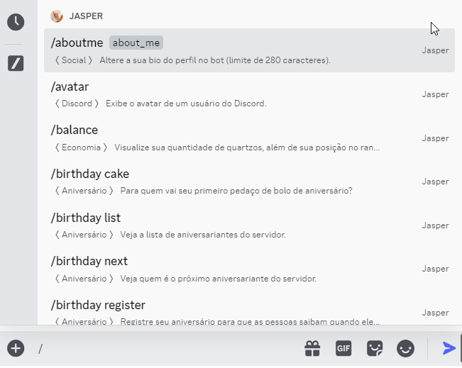
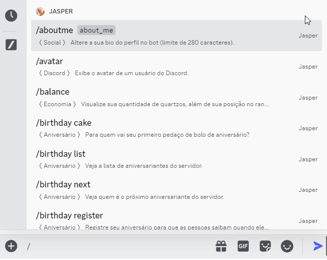

• Sou um bot do Discord inspirado em ninguém menos que eu mesma, Jasper! Sei que sou conhecida por ser
durona, mas vou maneirar com você... por enquanto!
• Fui desenvolvida com o poder do Java pelo @souarth. Venho dominando (ou pelo menos
tentando dominar!) servidores do Discord desde .
Java pelo @souarth. Venho dominando (ou pelo menos
tentando dominar!) servidores do Discord desde .
• Tenho 55 comandos diferentes para comandar e entreter o seu servidor do Discord! Todos estão disponíveis na versão de slash commands, comandos de barra, então basta digitar e esperar que o Discord faça o resto!

• Estou em, aproximadamente, 60 servidores. Todo mundo começa do baixo, né? Busco aumentar essa quantidade, logo, sinta-se livre para clicar aqui e me adicionar no seu servidor!
• E se não conhece meu poder, vou listar alguns dos meus comandos mais usados pra você saber do que sou capaz!
• Fui desenvolvida com o poder do
Java pelo @souarth. Venho dominando (ou pelo menos
tentando dominar!) servidores do Discord desde .
• Tenho 55 comandos diferentes para comandar e entreter o seu servidor do Discord! Todos estão disponíveis na versão de slash commands, comandos de barra, então basta digitar e esperar que o Discord faça o resto!

• Estou em, aproximadamente, 60 servidores. Todo mundo começa do baixo, né? Busco aumentar essa quantidade, logo, sinta-se livre para clicar aqui e me adicionar no seu servidor!
• E se não conhece meu poder, vou listar alguns dos meus comandos mais usados pra você saber do que sou capaz!
| /profile | Social | Visualize a imagem do seu perfil ou o de outro usuário no bot |
|---|---|---|
| /birthday register | Social | Registre seu aniversário para que ele seja anunciado em servidores que me configuraram para isso |
| /daily | Economia | Colete seus quartzos, minha moeda própria, diariamente |
| /config birthday | Moderação | Configure-me para anunciar aniversários dos membros do seu servidor |
| /lastfm collage | Last.fm | Visualize uma colagem dos seus álbuns mais escutados no LastFM em um período de tempo |
| /lastfm semaninha | Last.fm | Faça-me enviar todas as sextas-feiras, nas suas mensagens diretas, uma colagem dos seus álbuns mais escutados na semana |
| /idle help | Idle Diamond Simulator | Conheça sobre o meu mini-game, Idle Diamond Simulator |
| /termo play | Termo | Jogue meu mini-game diário de Termo, baseado no jogo de mesmo nome de acertar palavras |